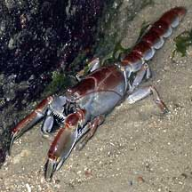
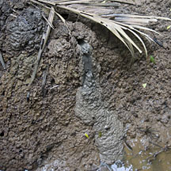
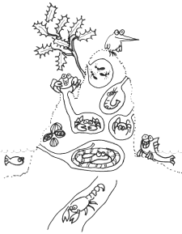
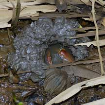
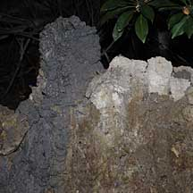
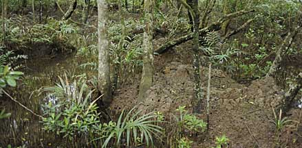

|
|
| crustacea text index | photo index |
| Phylum Arthropoda > Subphylum Crustacea > Class Malacostraca > Order Decapoda > Lobsters |
| Mud
lobster Thalassina sp. Family Thalassinidae updated Mar 2020
Where seen? The mud lobster is almost never seen out of its burrow in the mangrove mud. But the impressive mounds created by this animal are still commonly seen in the undisturbed back mangroves on our shores. Features: Up to 30cm long. The mud lobster is actually not a lobster but more of a giant shrimp. It is more closely related to ghost shrimps of the genus Callianasa. The mud lobster lives deep under the mound in a U-shaped tunnel and rarely emerges above ground. According to the Singapore Red Data Book, there are two species of mudlobsters found in Singapore. Thalassina gracilis is smaller with a pointed 'nose' (rostrum) and known to live next to Thalassina anomala. Thalassina gracilis was not seen for a long time until it was recently re-discovered. Marvellous farmer of the mangroves: The mud lobster plays a key role in sustaining life in a mangrove. It is believed to eat mud. As it eats-and-digs, it recycles nutrients from deep underground, bringing these within reach of other plants and animals. Its digging also loosens the mud and allows air and oxygenated water to penetrate the otherwise oxygen-poor ground. All this digging also eventually results in a distinctive volcano-shaped mound that can reach impressive proportions. |
 Chek Jawa, Nov 01 |
 Fresh mud from a mound suggests an active mud lobster deep underground. Chek Jawa, Mar 12 |
 |
| Mud lobster 'Condo': A mud lobster mound can be as tall as 2m above the ground! The mud lobster mound is drier than its surroundings so it makes a perfect home for other animals. Many animals can be found in living in these 'high-rise' mounds, creating their own burrows in the mound, sometimes complete with chimneys. 'Condo' dwellers include snakes, crabs, ants, spiders, worms, clams and shrimps. Some plants also appear to grow better on these mounds. The condominium comes complete with swimming pool! Water is trapped in the mound system forming pools. At low tide, these shelter aquatic animals such as mudskippers. |
|
 Mudlobster in its burrow. Chek Jawa, Oct 07 |

| Human
uses: Mud lobsters are eaten in some Pacific Islands such
as Fiji. In our part of the world, they are considered a nuinsance
by fish and prawn farmers as their digging activities undermine the
bunds (raised edges of mud) that surround fish and prawn ponds. Status and threats: Our mud lobsters are listed as 'Endangered' on the Red List of threatened animals of Singapore, as their preferred habitats are lost or degraded. If they disappear, so will their 'condos' and the plants and animals living there. Like other creatures of the intertidal zone, they are affected by human activities such as reclamation and pollution. |
|
 Mudlobster mounds Sungei Pandan, Jun 09 |
 Mudlobster mounds Chek Jawa, Oct 09 |
|
| Mud lobsters on Singapore shores |
On wildsingapore
flickr
|
| Other sightings on Singapore shores |

Seen at Chek Jawa from the mangrove boardwalk on 29 Aug 09. Video clip shared by November on her flickr. |
|
Links
References
|